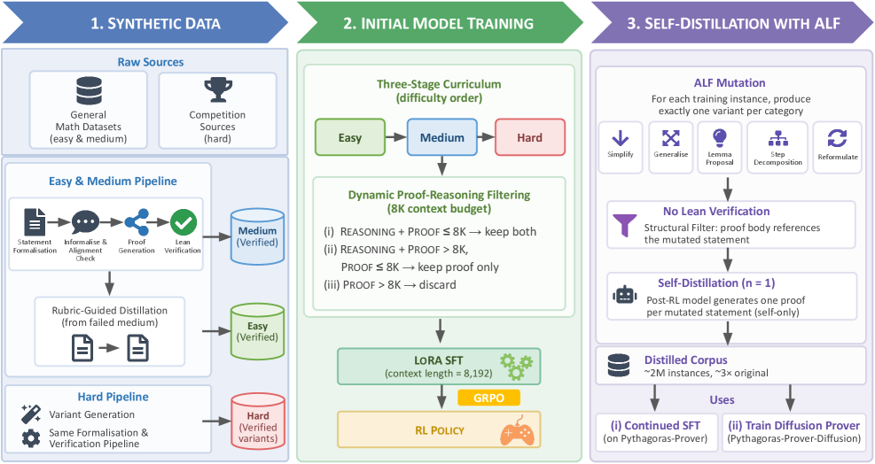
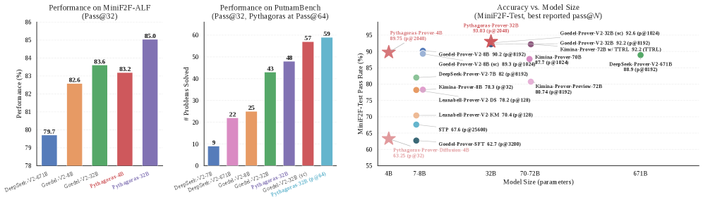

Trains compute-efficient Lean 4 theorem provers and a Lean corpus augmentation method, evaluated on MiniF2F and PutnamBench.
Abstract
Modern Lean theorem provers achieve strong performance only with substantial training and inference compute, driven in part by scarce verified proof data and the long reasoning traces of formal proof search, making both supervised fine-tuning (SFT) and sampling expensive. We introduce Pythagoras-Prover, a compute-efficient open-source family of Lean theorem provers built for practical compute budgets. The family spans two generation paradigms: autoregressive models at 4B and 32B parameters, and a first proof-of-concept diffusion-based prover (4B) that iteratively refines Lean proofs at inference time. For training efficiency, we build a Lean-verified corpus stratified into easy, medium, and hard problems for curriculum SFT, so models acquire proof skills progressively from shorter, simpler proofs to longer, harder ones. During SFT, a dynamic proof-reasoning filtering scheme preserves informative proof traces while keeping each instance within an 8k-token context budget. We also introduce Augmented Lean Formalisation (ALF), which expands scarce verified corpora into variants of formal statements, populated via self-distillation for extra training signal without formally verifying every mutated instance. By perturbing known problems while preserving their formal character, ALF reduces reliance on any statement's surface form. Empirically, Pythagoras-Prover-4B surpasses DeepSeek-Prover-V2-671B at pass@32 on MiniF2F-Test (86.1% vs 82.4%) with ~167x fewer parameters, while Pythagoras-Prover-32B sets the open-source state of the art at 93.0% on MiniF2F-Test and solves 93 of 672 PutnamBench problems. We release MiniF2F-ALF, an ALF-mutated contamination-sensitive benchmark on which every evaluated model loses accuracy; here our 32B remains strongest and our 4B matches the prior state of the art, Goedel-Prover-V2-32B.
Problem
Lean theorem provers reach strong performance only with heavy training and inference compute, driven by scarce verified proof data and long proof-search traces, making supervised fine-tuning and sampling expensive.
Approach
Pythagoras-Prover is an open-source family of Lean provers: autoregressive 4B and 32B models plus a proof-of-concept 4B diffusion prover that iteratively refines Lean proofs. Training uses a Lean-verified corpus stratified into easy, medium, and hard tiers for curriculum SFT, with dynamic proof-reasoning filtering kept within an 8k-token budget. Augmented Lean Formalisation (ALF) expands the corpus by perturbing known problems into formal-statement variants populated via self-distillation.

Figure 3: Overview of Pythagoras-Prover pipeline.
Results
Pythagoras-Prover-4B reaches 86.1% pass@32 on MiniF2F-Test, surpassing DeepSeek-Prover-V2-671B (82.4%) with ~167x fewer parameters; the 32B sets the open-source state of the art at 93.0% and solves 93 of 672 PutnamBench problems.

Figure 1: Performance comparison across proving tasks. The left and middle panels show results under a limited Pass@32 inference budget on MiniF2F-ALF and PutnamBench, respectively; for PutnamBench we additionally include Pythagoras-Prover at Pass@64, which incurs an inference cost comparable to Goedel-Prover-V2 with self-correction (see § 4 for detailed explanation). The right panel plots best-re
Method
#Params
Pass@32
Pass@1024
DeepSeek-Prover-V2-671B
671B
82.4
–
Goedel-Prover-V2-32B
32B
88.1
91.8
Pythagoras-Prover-4B
4B
86.1
88.1
MiniF2F-Test accuracy (pass@32 / pass@1024) across provers.